SWISS-MODEL Homology Modelling Report |
Model Building Report
This document lists the results for the homology modelling project "T451DRAFT_1644" submitted to SWISS-MODEL workspace on July 14, 2017, 9:17 p.m..The submitted primary amino acid sequence is given in Table T1.
If you use any results in your research, please cite the relevant publications:
Marco Biasini; Stefan Bienert; Andrew Waterhouse; Konstantin Arnold; Gabriel Studer; Tobias Schmidt; Florian Kiefer; Tiziano Gallo Cassarino; Martino Bertoni; Lorenza Bordoli; Torsten Schwede. (2014). SWISS-MODEL: modelling protein tertiary and quaternary structure using evolutionary information. Nucleic Acids Research (1 July 2014) 42 (W1): W252-W258; doi: 10.1093/nar/gku340.Arnold, K., Bordoli, L., Kopp, J. and Schwede, T. (2006) The SWISS-MODEL workspace: a web-based environment for protein structure homology modelling. Bioinformatics, 22, 195-201.
Benkert, P., Biasini, M. and Schwede, T. (2011) Toward the estimation of the absolute quality of individual protein structure models. Bioinformatics, 27, 343-350
Results
The SWISS-MODEL template library (SMTL version 2017-07-12, PDB release 2017-07-07) was searched with Blast (Altschul et al., 1997) and HHBlits (Remmert, et al., 2011) for evolutionary related structures matching the target sequence in Table T1. For details on the template search, see Materials and Methods. Overall 207 templates were found (Table T2).
Models
The following models were built (see Materials and Methods "Model Building"):
Model #01 | File | Built with | Oligo-State | Ligands | GMQE | QMEAN |
|---|---|---|---|---|---|---|
| 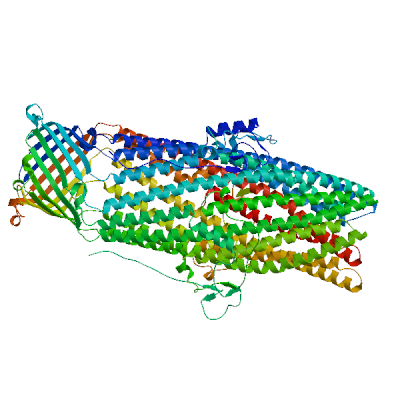 | PDB | ProMod3 Version 1.0.2. | homo-trimer (matching prediction) | None | 0.58 | -2.91 |
| 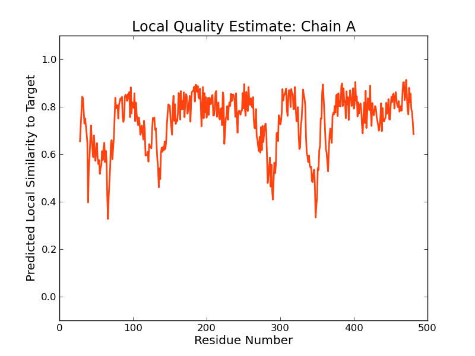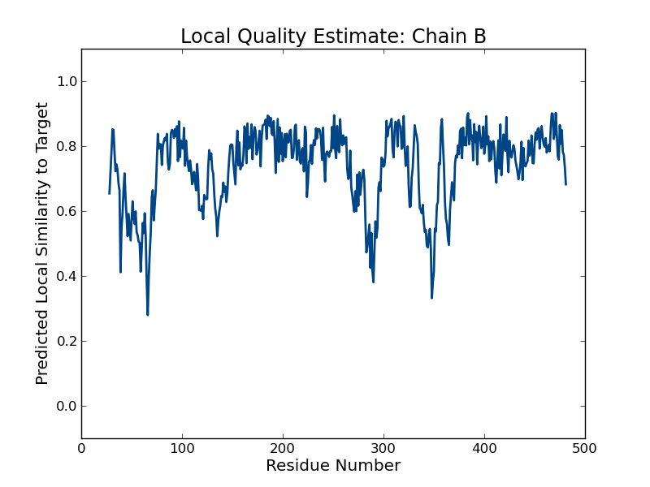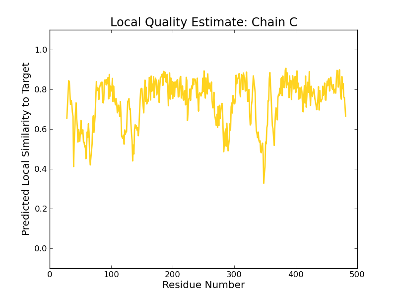 |
| Template | Seq Identity | Oligo-state | Found by | Method | Resolution | Seq Similarity | Range | Coverage | Description |
|---|---|---|---|---|---|---|---|---|---|
| 5azo.1.A | 31.94 | homo-trimer | BLAST | X-ray | 2.70Å | 0.35 | 28 - 481 | 0.83 | Multidrug efflux outer membrane protein OprN |
Target MSDKNLQRLSWSLLPLLLSACGSSGLLTTVGPDYQTKPLKAAANWQAPQPGENNLPTAHQGDPANLSR----WWQRFNDP
5azo.1.A ---------------------------CTVGPDYRT-PDTAAAKIDA---------TASK--PYDRSRFESLWWKQFDDP
Target VLNRFLAAAQQESASVADARARIEQARANLVGADAALLPSIDSSIGAKRSSSSFGGA--PFVWN------QLPAGLQSSW
5azo.1.A TLNQLVEQSLSGNRDLRVAFARLRAARALRDDVANDRFPVVTS-----RASADIGKGQQPGVTEDRVNSERYDLGLDSAW
Target EVDLFGGLARQEEAARSQLESRNASWHDARVSVAAEAANAYLAYRYCEGQVQIVQADTASRRESARLSEIAGKAGFHAPG
5azo.1.A ELDLFGRIRRQLESSDALSEAAEADLQQLQVSLIAELVDAYGQLRGAQLREKIALSNLENQKESRQLTEQLRDAGVGAEL
Target DVALANASAAEGNRTLLQQQAQCERSIKGLVAMTGLQEPEVRKLLTEAPDRVAKLPSPPVFRIDSLPAQVLLQRPDVASA
5azo.1.A DVLRADARLAATAASVPQLQAEAERARHRIATLLG-QRPEELTVDLSPRDLPAITKALPI----GDPGELLRRRPDIRAA
Target ERDVAEASAKIGVEQAKRFPKLSLSGNITPTLQNINGGAFLLAQTWAIGPTLNLPLFDAGKRAADVEAARVQYQAAESKF
5azo.1.A ERRLAASTADVGVATADLFPRVSLSGFLGFTAGRGSQIGSSAARAWSVGPSISWAAFDLGSVRARLRGAKADADAALASY
Target RSKVRTAVKEVEEALVRLDSASQRLPEGRKAVTGYRANFLAVQQLYQVGLGNLIDVETSRRNVLSAEMALKELEQEQVSA
5azo.1.A EQQVLLALEESANAFSDYGKRQERLVSLVRQSEASRAAAQQAAIRYREGTTDFLVLLDAEREQLSAEDAQAQAEVELYRG
Target WIALYRAVGGSWEEHDDARKIGAASSSAPSSGEPKKPDHYLNHQVDFTGGKS
5azo.1.A IVAIYRSLGGGWQ---------------------------------------
Model #02 | File | Built with | Oligo-State | Ligands | GMQE | QMEAN |
|---|---|---|---|---|---|---|
| 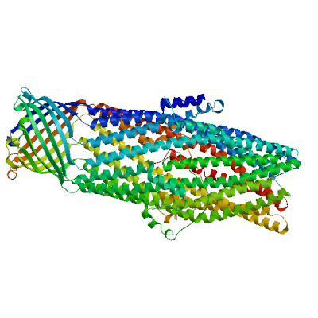 | PDB | ProMod3 Version 1.0.2. | homo-trimer (matching prediction) | None | 0.52 | -2.07 |
| 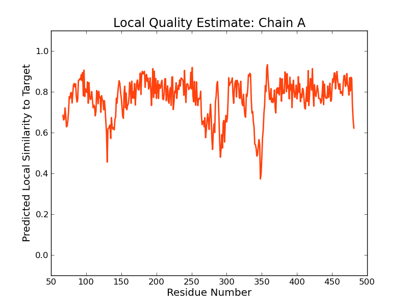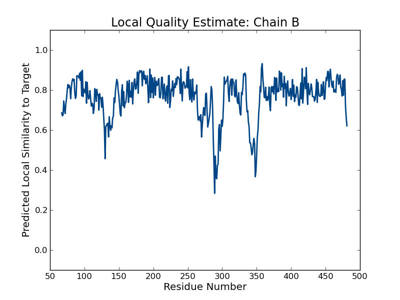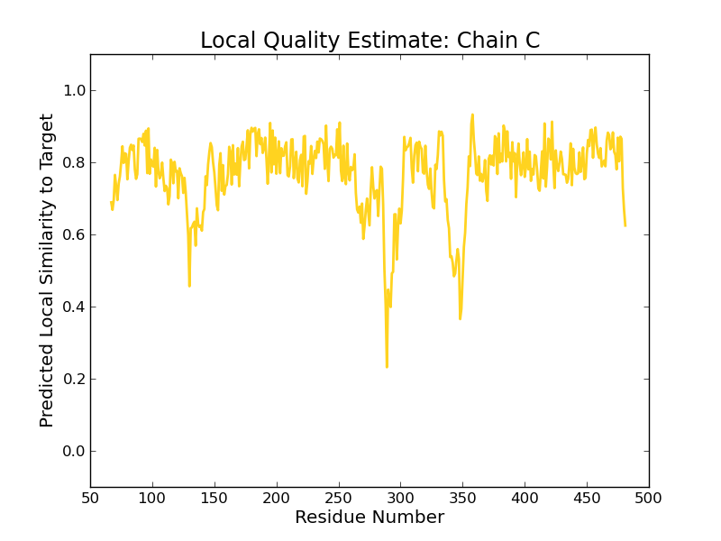 | 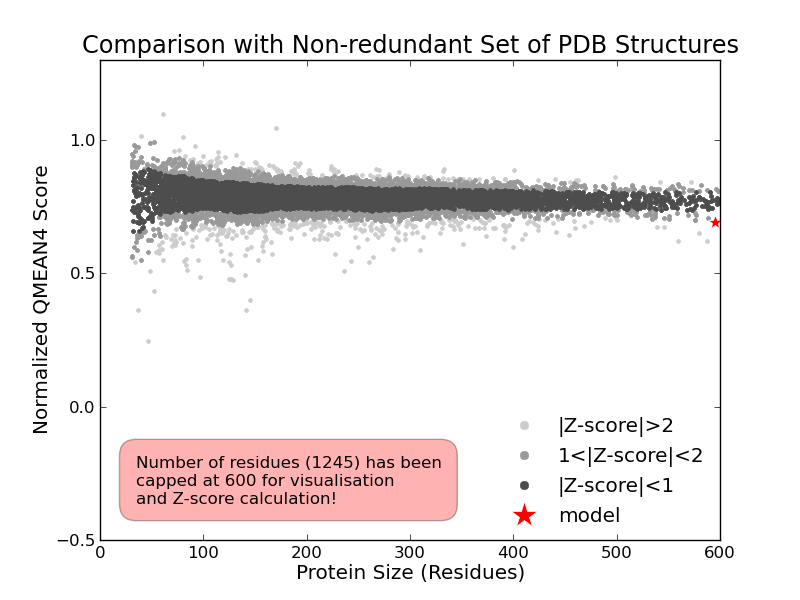 |
| Template | Seq Identity | Oligo-state | Found by | Method | Resolution | Seq Similarity | Range | Coverage | Description |
|---|---|---|---|---|---|---|---|---|---|
| 1yc9.1.A | 24.09 | homo-trimer | HHblits | X-ray | 1.80Å | 0.31 | 67 - 481 | 0.79 | multidrug resistance protein |
| Ligand | Added to Model | Description |
|---|---|---|
| BOG | ✕ - Binding site not conserved. | SUGAR (B-OCTYLGLUCOSIDE) |
| BOG | ✕ - Binding site not conserved. | SUGAR (B-OCTYLGLUCOSIDE) |
| BOG | ✕ - Binding site not conserved. | SUGAR (B-OCTYLGLUCOSIDE) |
| HG | ✕ - Binding site not conserved. | MERCURY (II) ION |
| HG | ✕ - Binding site not conserved. | MERCURY (II) ION |
| HG | ✕ - Binding site not conserved. | MERCURY (II) ION |
| HG | ✕ - Binding site not conserved. | MERCURY (II) ION |
| HG | ✕ - Binding site not conserved. | MERCURY (II) ION |
| HG | ✕ - Binding site not conserved. | MERCURY (II) ION |
Target MSDKNLQRLSWSLLPLLLSACGSSGLLTTVGPDYQTKPLKAAANWQAPQPGENNLPTAHQGDPANLSRWWQRFNDPVLNR
1yc9.1.A ------------------------------------------------------------------ANWWQRYQDAQLNH
Target FLAAAQQESASVADARARIEQARANLVGADAALLPSIDSSIGAKRSSSSFGG----A-PFVWNQLPAGLQSSWEVDLFGG
1yc9.1.A LIEEALQHSPSLCMAMARLKGAQGFARQAGAIRSFDLGLAASATESKVSERYQSATPPDGWNDYGTLTLNFQYDFDFWGK
Target LARQEEAARSQLESRNASWHDARVSVAAEAANAYLAYRYCEGQVQIVQADTASRRESARLSEIAGKAGFHAPGDVALANA
1yc9.1.A NRAAVVAATSELAAAEAESVAARLMISTSIANAYAELARLYANQETVHAALQVRNKTVELLEKRYANGLETLGSVSQAKA
Target SAAEGNRTLLQQQAQCERSIKGLVAMTGLQEPEVRKLLTEAPDRVAKLPS-PPVFRIDSLPAQVLLQRPDVASAERDVAE
1yc9.1.A VAASVEAELLGIQESIQLQKNALAALVGQGPDRAAS-IE--EPH--ITLTSRYGLP-SEAGVGLLGHRADITAARWRAEA
Target ASAKIGVEQAKRFPKLSLSGNITPTLQNINGGAFLLAQTWAIGPTLNLPLFDAGKRAADVEAARVQYQAAESKFRSKVRT
1yc9.1.A AAQQVGIAQAQFYPDVTLSAFIGYQAFGLDHLFDSGNDAGAIGPAIYLPLFTGGRLEGQLTSAEARYQEAVAQYNGTLVQ
Target AVKEVEEALVRLDSASQRLPEGRKAVTGYRANFLAVQQLYQVGLGNLIDVETSRRNVLSAEMALKELEQEQVSAWIALYR
1yc9.1.A ALHEIADVVTSSQALQARINKTEQAVQQAEQALHIATNRYQGGLATYLDVLVAEESLLNNQRALVNLQSRAFSLDLALIH
Target AVGGSWEEHDDARKIGAASSSAPSSGEPKKPDHYLNHQVDFTGGKS
1yc9.1.A ALGGGFETT-------------------------------------
Model #04 | File | Built with | Oligo-State | Ligands | GMQE | QMEAN |
|---|---|---|---|---|---|---|
| 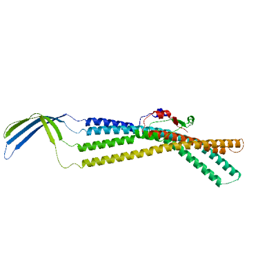 | PDB | ProMod3 Version 1.0.2. | MONOMER | None | 0.48 | -2.95 |
| 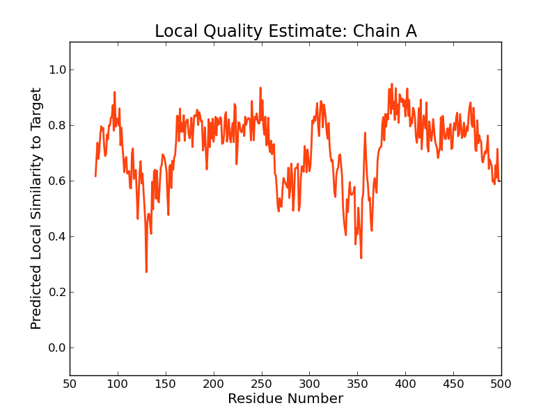 |
| Template | Seq Identity | Oligo-state | Found by | Method | Resolution | Seq Similarity | Range | Coverage | Description |
|---|---|---|---|---|---|---|---|---|---|
| 5nik.1.A | 16.44 | hetero-oligomer | HHblits | EM | NA | 0.28 | 77 - 498 | 0.83 | Outer membrane protein TolC |
Target MSDKNLQRLSWSLLPLLLSACGSSGLLTTVGPDYQTKPLKAAANWQAPQPGENNLPTAHQGDPANLSRWWQRFNDPVLNR
5nik.1.A ----------------------------------------------------------------------------NLMQ
Target FLAAAQQESASVADARARIEQARANLVGADAALLPSIDSSIGAKRSSSSFGGAPFVWNQLPAGLQSSWEVDLFGGLARQE
5nik.1.A VYQQARLSNPELRKSAADRDAAFEKINEARSPLLPQLGLGADYTYSNGYRDANGINSNATSASLQLTQSIFDMSKW-RAL
Target EAARSQLESRNASWHDARVSVAAEAANAYLAYRYCEGQVQIVQADTASRRESARLSEIAGKAGFHAPGDVALANASAAEG
5nik.1.A TLQEKAAGIQDVTYQTDQQTLILNTATAYFNVLNAIDVLSYTQAQKEAIYRQLDQTTQRFNVGLVAITDVQNARAQYDTV
Target NRTLLQQQAQCERSIKGLVAMTGLQEPEVRKLLTEAPDRVAKLPSPPVFRIDSLPAQVLLQRPDVASAERDVAEASAKIG
5nik.1.A LANELTARNNLDNAVEQLRQITGNYYPELAA-LN---VE--NFKTDKPQPVNALLKEAEKRNLSLLQARLSQDLAREQIR
Target VEQAKRFPKLSLSGNITPTLQNINGG---------AFLLAQTWA-IGPTLNLPLFDAGKRAADVEAARVQYQAAESKFRS
5nik.1.A QAQDGHLPTLDLTASTGISDTSYSGSKTRGAAGTQYDDSNMGQNKVGLSFSLPIYQGGMVNSQVKQAQYNFVGASEQLES
Target KVRTAVKEVEEALVRLDSASQRLPEGRKAVTGYRANFLAVQQLYQVGLGNLIDVETSRRNVLSAEMALKELEQEQVSAWI
5nik.1.A AHRSVVQTVRSSFNNINASISSINAYKQAVVSAQSSLDAMEAGYSVGTRTIVDVLDATTTLYNAKQELANARYNYLINQL
Target ALYRAVGGSWEEHDDARKIGAASS----SAPSSGEPKKPDHYLNHQV---DFTGGKS
5nik.1.A NIKSALGT--LNEQDLLALNNALSKPVSTNPENVAPQTPEQNAIADGYAPDSPA---
Model #03 | File | Built with | Oligo-State | Ligands | GMQE | QMEAN |
|---|---|---|---|---|---|---|
| 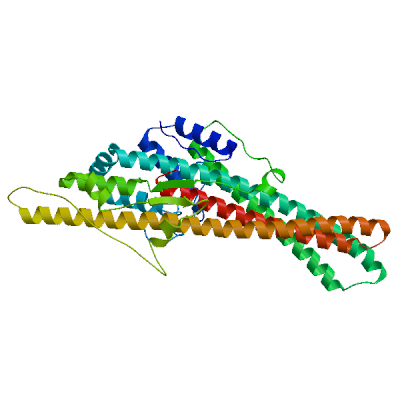 | PDB | ProMod3 Version 1.0.2. | MONOMER | None | 0.48 | -3.46 |
| 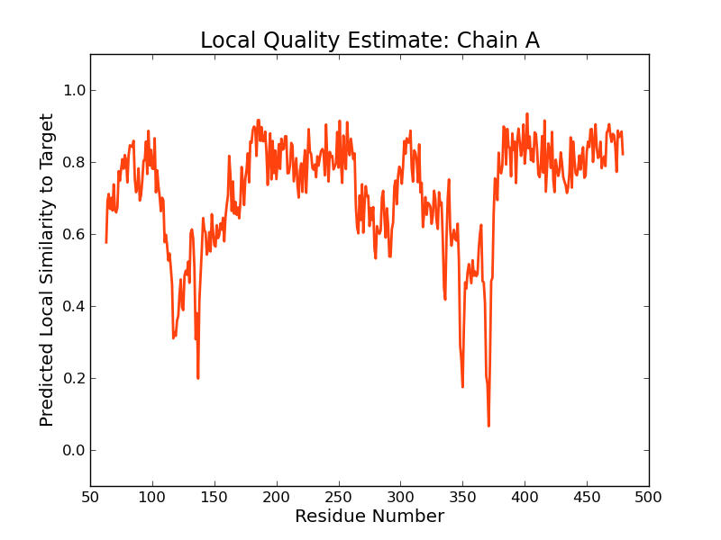 | 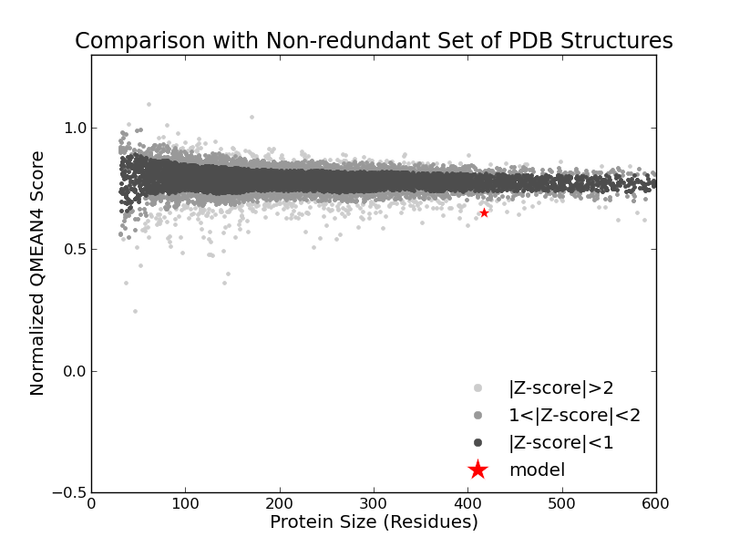 |
| Template | Seq Identity | Oligo-state | Found by | Method | Resolution | Seq Similarity | Range | Coverage | Description |
|---|---|---|---|---|---|---|---|---|---|
| 4k7k.1.A | 21.28 | monomer | HHblits | X-ray | 2.53Å | 0.32 | 63 - 479 | 0.84 | Cation efflux system protein CusC |
Target MSDKNLQRLSWSLLPLLLSACGSSGLLTTVGPDYQTKPLKAAANWQAPQPGENNLPTAHQGDPANLSRWWQRFNDPVLNR
4k7k.1.A -----------------------------LAPDYQRPAMPVPQQFSLSQNG----LVNAADNYQN-AGWRTFFVDNQVKT
Target FLAAAQQESASVADARARIEQARANLVGADAALLPSIDSSIGAKRSSSSFGGAPFVWNQLPAGLQSSWEVDLFGGLARQE
4k7k.1.A LISEALVNNRDLRMATLKVQEARAQYRLTDADRYPQLNGEGSGSWSGNLKG-NTATTREFSTGLNASFDLDFFGRLKNMS
Target EAARSQLESRNASWHDARVSVAAEAANAYLAYRYCEGQVQIVQADTASRRESARLSEIAGKAGFHAPGDVALANASAAEG
4k7k.1.A EAERQNYLATEEAQRAVHILLVSNVAQSYFNQQLAYAQLQIAEETLRNYQQSYAFVEKQLLTGSSNVLALEQARGVIEST
Target NRTLLQQQAQCERSIKGLVAMTGLQEPEVRKLLTEAPDRVAKLPS-PPVFRIDSLPAQVLLQRPDVASAERDVAEASAKI
4k7k.1.A RSDIAKRQGELAQANNALQLLLGSY-GKLP--QAQ-TVN--SDSLQSVKLP-AGLSSQILLQRPDIMEAEHALMAANANI
Target GVEQAKRFPKLSLSGNITPTLQNINGGAFLLAQTWAIGPTLNLPLFDAGKRAADVEAARVQYQAAESKFRSKVRTAVKEV
4k7k.1.A GAARAAFFPSISLTSGISTASSDLSSLFNASSGMWNFIPKIEIPIFNAGRNQANLDIAEIRQQQSVVNYEQKIQNAFKEV
Target EEALVRLDSASQRLPEGRKAVTGYRANFLAVQQLYQVGLGNLIDVETSRRNVLSAEMALKELEQEQVSAWIALYRAVGGS
4k7k.1.A ADALALRQSLNDQISAQQRYLASLQITLQRARALYQHGAVSYLEVLDAERSLFATRQTLLDLNYARQVNEISLYTALGGG
Target WEEHDDARKIGAASSSAPSSGEPKKPDHYLNHQVDFTGGKS
4k7k.1.A -----------------------------------------
Model #05 | File | Built with | Oligo-State | Ligands | GMQE | QMEAN |
|---|---|---|---|---|---|---|
 | PDB | ProMod3 Version 1.0.2. | MONOMER (matching prediction) | None | 0.16 | -3.12 |
| 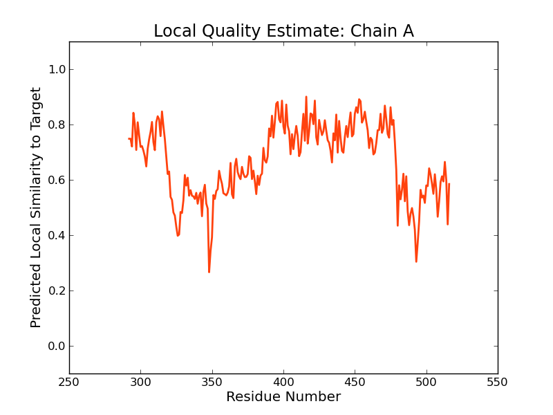 | 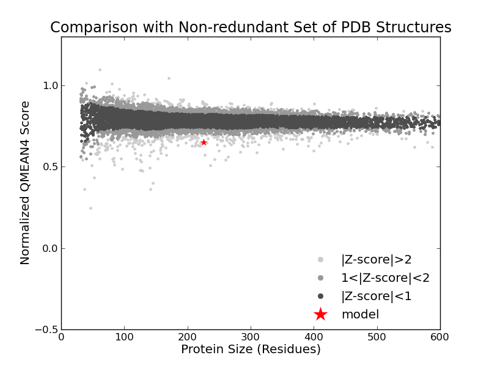 |
| Template | Seq Identity | Oligo-state | Found by | Method | Resolution | Seq Similarity | Range | Coverage | Description |
|---|---|---|---|---|---|---|---|---|---|
| 4k34.1.A | 19.63 | homo-dimer | HHblits | X-ray | 2.69Å | 0.29 | 292 - 516 | 0.42 | Cation efflux system protein CusC |
Target MSDKNLQRLSWSLLPLLLSACGSSGLLTTVGPDYQTKPLKAAANWQAPQPGENNLPTAHQGDPANLSRWWQRFNDPVLNR
4k34.1.A --------------------------------------------------------------------------------
Target FLAAAQQESASVADARARIEQARANLVGADAALLPSIDSSIGAKRSSSSFGGAPFVWNQLPAGLQSSWEVDLFGGLARQE
4k34.1.A --------------------------------------------------------------------------------
Target EAARSQLESRNASWHDARVSVAAEAANAYLAYRYCEGQVQIVQADTASRRESARLSEIAGKAGFHAPGDVALANASAAEG
4k34.1.A --------------------------------------------------------------------------------
Target NRTLLQQQAQCERSIKGLVAMTGLQEPEVRKLLTEAPDRVAKLPSPPVFRIDSLPAQVLLQRPDVASAERDVAEASAKIG
4k34.1.A ---------------------------------------------------KTLISEALVNNRDLRMATLKVQEARAQYR
Target VEQAKRFPKLSLSGNITPTLQNINGGAFLLAQTWAIGPTLNLPLFDAGKRAADVEAARVQYQAAESKFRSKVRTAVKEVE
4k34.1.A LTDADRYPQLNGEGSGSWSGNLKGN--TATTREFSTGLNASFDLDFFGRLKNMSEAERQNYLATEEAQRAVHILLVSNVA
Target EALVRLDSASQRLPEGRKAVTGYRANFLAVQQLYQVGLGNLIDVETSRRNVLSAEMALKELEQEQVSAWIALYRAVGGSW
4k34.1.A QSYFNQQLAYAQLQIAEETLRNYQQSYAFVEKQLLTGSSNVLALEQARGVIESTRSDIAKRQGELAQANNALQLLLGSY-
Target EEHDDARKIGAA-SSSA-PSSGEPKKPDHYLNHQVDFTGGKS
4k34.1.A ---GKLPQAQTVNSDSLQSVKLPAGLSSQILLQRPDIM----
Materials and Methods
Template Search
Template search with Blast and HHBlits has been performed against the SWISS-MODEL template library (SMTL, last update: 2017-07-12, last included PDB release: 2017-07-07).
The target sequence was searched with BLAST (Altschul et al., 1997) against the primary amino acid sequence contained in the SMTL. A total of 15 templates were found.
An initial HHblits profile has been built using the procedure outlined in (Remmert, et al., 2011), followed by 1 iteration of HHblits against NR20. The obtained profile has then be searched against all profiles of the SMTL. A total of 211 templates were found.
Template Selection
For each identified template, the template's quality has been predicted from features of the target-template alignment. The templates with the highest quality have then been selected for model building.
Model Building
Models are built based on the target-template alignment using ProMod3. Coordinates which are conserved between the target and the template are copied from the template to the model. Insertions and deletions are remodelled using a fragment library. Side chains are then rebuilt. Finally, the geometry of the resulting model is regularized by using a force field. In case loop modelling with ProMod3 fails, an alternative model is built with PROMOD-II (Guex, et al., 1997).
Model Quality Estimation
The global and per-residue model quality has been assessed using the QMEAN scoring function (Benkert, et al., 2011) . For improved performance, weights of the individual QMEAN terms have been trained specifically for SWISS-MODEL.
Ligand Modelling
Ligands present in the template structure are transferred by homology to the model when the following criteria are met (Gallo -Casserino, to be published): (a) The ligands are annotated as biologically relevant in the template library, (b) the ligand is in contact with the model, (c) the ligand is not clashing with the protein, (d) the residues in contact with the ligand are conserved between the target and the template. If any of these four criteria is not satisfied, a certain ligand will not be included in the model. The model summary includes information on why and which ligand has not been included.
Oligomeric State Conservation
Homo-oligomeric structure of the target protein is predicted based on the analysis of pairwise interfaces of the identified template structures. For each relevant interface between polypeptide chains (interfaces with more than 10 residue-residue interactions), the QscoreOligomer (Mariani et al., 2011) is predicted from features such as similarity to target and frequency of observing this interface in the identified templates (Kiefer, Bertoni, Biasini, to be published). The prediction is performed with a random forest regressor using these features as input parameters to predict the probability of conservation for each interface. The QscoreOligomer of the whole complex is then calculated as the weight-averaged QscoreOligomer of the interfaces. The oligomeric state of the target is predicted to be the same as in the template when QscoreOligomer is predicted to be higher or equal to 0.5.
References
Altschul, S.F., Madden, T.L., Schaffer, A.A., Zhang, J., Zhang, Z., Miller, W. and Lipman, D.J. (1997) Gapped BLAST and PSI-BLAST: a new generation of protein database search programs. Nucleic Acids Res, 25, 3389-3402.
Remmert, M., Biegert, A., Hauser, A. and Soding, J. (2012) HHblits: lightning-fast iterative protein sequence searching by HMM-HMM alignment. Nat Methods, 9, 173-175.
Guex, N. and Peitsch, M.C. (1997) SWISS-MODEL and the Swiss-PdbViewer: an environment for comparative protein modeling. Electrophoresis, 18, 2714-2723.
Sali, A. and Blundell, T.L. (1993) Comparative protein modelling by satisfaction of spatial restraints. J Mol Biol, 234, 779-815.
Benkert, P., Biasini, M. and Schwede, T. (2011) Toward the estimation of the absolute quality of individual protein structure models. Bioinformatics, 27, 343-350.
Mariani, V., Kiefer, F., Schmidt, T., Haas, J. and Schwede, T. (2011) Assessment of template based protein structure predictions in CASP9. Proteins, 79 Suppl 10, 37-58.
Table T1:
Primary amino acid sequence for which templates were searched and models were built.
QARANLVGADAALLPSIDSSIGAKRSSSSFGGAPFVWNQLPAGLQSSWEVDLFGGLARQEEAARSQLESRNASWHDARVSVAAEAANAYLAYRYCEGQVQ
IVQADTASRRESARLSEIAGKAGFHAPGDVALANASAAEGNRTLLQQQAQCERSIKGLVAMTGLQEPEVRKLLTEAPDRVAKLPSPPVFRIDSLPAQVLL
QRPDVASAERDVAEASAKIGVEQAKRFPKLSLSGNITPTLQNINGGAFLLAQTWAIGPTLNLPLFDAGKRAADVEAARVQYQAAESKFRSKVRTAVKEVE
EALVRLDSASQRLPEGRKAVTGYRANFLAVQQLYQVGLGNLIDVETSRRNVLSAEMALKELEQEQVSAWIALYRAVGGSWEEHDDARKIGAASSSAPSSG
EPKKPDHYLNHQVDFTGGKS
Table T2:
| Template | Seq Identity | Oligo-state | Found by | Method | Resolution | Seq Similarity | Coverage | Description |
|---|---|---|---|---|---|---|---|---|
| 5iuy.1.A | 31.94 | homo-trimer | BLAST | X-ray | 2.29Å | 0.35 | 0.83 | Multidrug efflux outer membrane protein OprN |
| 5azo.1.A | 31.94 | homo-trimer | BLAST | X-ray | 2.70Å | 0.35 | 0.83 | Multidrug efflux outer membrane protein OprN |
| 3d5k.1.A | 24.55 | homo-trimer | HHblits | X-ray | 2.40Å | 0.32 | 0.85 | Outer membrane protein oprM |
| 1wp1.2.A | 24.55 | homo-trimer | HHblits | X-ray | 2.56Å | 0.32 | 0.85 | Outer membrane protein oprM |
| 5azo.1.A | 28.47 | homo-trimer | HHblits | X-ray | 2.70Å | 0.33 | 0.84 | Multidrug efflux outer membrane protein OprN |
| 5iuy.1.A | 28.54 | homo-trimer | HHblits | X-ray | 2.29Å | 0.33 | 0.84 | Multidrug efflux outer membrane protein OprN |
| 3d5k.1.A | 28.24 | homo-trimer | BLAST | X-ray | 2.40Å | 0.34 | 0.83 | Outer membrane protein oprM |
| 1wp1.2.A | 28.24 | homo-trimer | BLAST | X-ray | 2.56Å | 0.34 | 0.83 | Outer membrane protein oprM |
| 5azs.1.A | 22.62 | homo-trimer | HHblits | X-ray | 3.10Å | 0.32 | 0.85 | Outer membrane protein OprJ |
| 5azs.1.B | 22.62 | homo-trimer | HHblits | X-ray | 3.10Å | 0.32 | 0.85 | Outer membrane protein OprJ |
| 5azs.1.C | 22.62 | homo-trimer | HHblits | X-ray | 3.10Å | 0.32 | 0.85 | Outer membrane protein OprJ |
| 4k34.1.A | 23.84 | homo-dimer | BLAST | X-ray | 2.69Å | 0.33 | 0.83 | Cation efflux system protein CusC |
| 4k34.1.B | 23.84 | homo-dimer | BLAST | X-ray | 2.69Å | 0.33 | 0.83 | Cation efflux system protein CusC |
| 3pik.1.A | 23.84 | homo-trimer | BLAST | X-ray | 2.30Å | 0.33 | 0.83 | Cation efflux system protein cusC |
| 4k7k.1.A | 23.84 | monomer | BLAST | X-ray | 2.53Å | 0.33 | 0.83 | Cation efflux system protein CusC |
| 4k7k.2.A | 23.84 | monomer | BLAST | X-ray | 2.53Å | 0.33 | 0.83 | Cation efflux system protein CusC |
| 4k34.1.A | 21.28 | homo-dimer | HHblits | X-ray | 2.69Å | 0.32 | 0.84 | Cation efflux system protein CusC |
| 4k34.1.B | 21.28 | homo-dimer | HHblits | X-ray | 2.69Å | 0.32 | 0.84 | Cation efflux system protein CusC |
| 3pik.1.A | 21.28 | homo-trimer | HHblits | X-ray | 2.30Å | 0.32 | 0.84 | Cation efflux system protein cusC |
| 4k7k.1.A | 21.28 | monomer | HHblits | X-ray | 2.53Å | 0.32 | 0.84 | Cation efflux system protein CusC |
| 4k7k.2.A | 21.28 | monomer | HHblits | X-ray | 2.53Å | 0.32 | 0.84 | Cation efflux system protein CusC |
| 4mt0.1.A | 24.03 | homo-trimer | HHblits | X-ray | 3.29Å | 0.31 | 0.84 | MtrE protein |
| 4mt4.1.A | 21.61 | homo-trimer | HHblits | X-ray | 2.37Å | 0.31 | 0.84 | CmeC |
| 1yc9.1.A | 28.37 | homo-trimer | BLAST | X-ray | 1.80Å | 0.34 | 0.80 | multidrug resistance protein |
| 4mt4.1.A | 26.62 | homo-trimer | BLAST | X-ray | 2.37Å | 0.34 | 0.77 | CmeC |
| 5nik.1.A | 16.44 | hetero-oligomer | HHblits | EM | NA | 0.28 | 0.83 | Outer membrane protein TolC |
| 1tqq.1.A | 16.36 | homo-trimer | HHblits | X-ray | 2.75Å | 0.28 | 0.82 | Outer membrane protein tolC |
| 1yc9.1.A | 24.09 | homo-trimer | HHblits | X-ray | 1.80Å | 0.31 | 0.79 | multidrug resistance protein |
| 4mt0.1.A | 30.51 | homo-trimer | BLAST | X-ray | 3.29Å | 0.35 | 0.75 | MtrE protein |
| 1ek9.1.A | 16.38 | homo-trimer | HHblits | X-ray | 2.10Å | 0.28 | 0.79 | OUTER MEMBRANE PROTEIN TOLC |
| 2wmz.1.A | 16.18 | homo-trimer | HHblits | X-ray | 2.90Å | 0.28 | 0.78 | OUTER MEMBRANE PROTEIN TOLC |
| 2xmn.1.A | 15.93 | homo-trimer | HHblits | X-ray | 2.85Å | 0.28 | 0.78 | OUTER MEMBRANE PROTEIN TOLC |
| 2vde.1.A | 15.93 | homo-trimer | HHblits | X-ray | 3.20Å | 0.28 | 0.78 | OUTER MEMBRANE PROTEIN TOLC |
| 2vde.1.B | 15.93 | homo-trimer | HHblits | X-ray | 3.20Å | 0.28 | 0.78 | OUTER MEMBRANE PROTEIN TOLC |
| 2vde.1.C | 15.93 | homo-trimer | HHblits | X-ray | 3.20Å | 0.28 | 0.78 | OUTER MEMBRANE PROTEIN TOLC |
| 2vdd.1.A | 15.93 | homo-trimer | HHblits | X-ray | 3.30Å | 0.28 | 0.78 | OUTER MEMBRANE PROTEIN TOLC |
| 2vdd.1.B | 15.93 | homo-trimer | HHblits | X-ray | 3.30Å | 0.28 | 0.78 | OUTER MEMBRANE PROTEIN TOLC |
| 2vdd.1.C | 15.93 | homo-trimer | HHblits | X-ray | 3.30Å | 0.28 | 0.78 | OUTER MEMBRANE PROTEIN TOLC |
| 5ng5.1.G | 15.97 | hetero-oligomer | HHblits | EM | NA | 0.28 | 0.78 | Outer membrane protein TolC |
| 5v5s.1.A | 15.97 | hetero-oligomer | HHblits | EM | NA | 0.28 | 0.78 | Outer membrane protein TolC |
| 5bun.1.A | 16.26 | homo-trimer | HHblits | X-ray | 2.98Å | 0.28 | 0.78 | Outer membrane protein |
| 5bun.1.B | 16.26 | homo-trimer | HHblits | X-ray | 2.98Å | 0.28 | 0.78 | Outer membrane protein |
| 5bun.1.C | 16.26 | homo-trimer | HHblits | X-ray | 2.98Å | 0.28 | 0.78 | Outer membrane protein |
| 5azs.1.A | 19.73 | homo-trimer | HHblits | X-ray | 3.10Å | 0.29 | 0.43 | Outer membrane protein OprJ |
| 5azs.1.B | 19.73 | homo-trimer | HHblits | X-ray | 3.10Å | 0.29 | 0.43 | Outer membrane protein OprJ |
| 5azs.1.C | 19.73 | homo-trimer | HHblits | X-ray | 3.10Å | 0.29 | 0.43 | Outer membrane protein OprJ |
| 5nik.1.A | 16.81 | hetero-oligomer | HHblits | EM | NA | 0.28 | 0.43 | Outer membrane protein TolC |
| 3d5k.1.A | 18.83 | homo-trimer | HHblits | X-ray | 2.40Å | 0.28 | 0.43 | Outer membrane protein oprM |
| 1wp1.2.A | 18.83 | homo-trimer | HHblits | X-ray | 2.56Å | 0.28 | 0.43 | Outer membrane protein oprM |
| 4k34.1.A | 19.63 | homo-dimer | HHblits | X-ray | 2.69Å | 0.29 | 0.42 | Cation efflux system protein CusC |
| 4k34.1.B | 19.63 | homo-dimer | HHblits | X-ray | 2.69Å | 0.29 | 0.42 | Cation efflux system protein CusC |
| 3pik.1.A | 19.63 | homo-trimer | HHblits | X-ray | 2.30Å | 0.29 | 0.42 | Cation efflux system protein cusC |
| 4k7k.1.A | 19.63 | monomer | HHblits | X-ray | 2.53Å | 0.29 | 0.42 | Cation efflux system protein CusC |
| 4k7k.2.A | 19.63 | monomer | HHblits | X-ray | 2.53Å | 0.29 | 0.42 | Cation efflux system protein CusC |
| 4mt4.1.A | 14.93 | homo-trimer | HHblits | X-ray | 2.37Å | 0.28 | 0.43 | CmeC |
| 5azo.1.A | 16.74 | homo-trimer | HHblits | X-ray | 2.70Å | 0.28 | 0.43 | Multidrug efflux outer membrane protein OprN |
| 5iuy.1.A | 16.74 | homo-trimer | HHblits | X-ray | 2.29Å | 0.28 | 0.43 | Multidrug efflux outer membrane protein OprN |
| 1yc9.1.A | 17.04 | homo-trimer | HHblits | X-ray | 1.80Å | 0.26 | 0.43 | multidrug resistance protein |
| 4mt0.1.A | 13.64 | homo-trimer | HHblits | X-ray | 3.29Å | 0.26 | 0.42 | MtrE protein |
| 5azs.1.A | 26.60 | homo-trimer | BLAST | X-ray | 3.10Å | 0.35 | 0.36 | Outer membrane protein OprJ |
| 5azs.1.B | 26.60 | homo-trimer | BLAST | X-ray | 3.10Å | 0.35 | 0.36 | Outer membrane protein OprJ |
| 5azs.1.C | 26.60 | homo-trimer | BLAST | X-ray | 3.10Å | 0.35 | 0.36 | Outer membrane protein OprJ |
| 5ng5.1.G | 17.44 | hetero-oligomer | HHblits | EM | NA | 0.29 | 0.38 | Outer membrane protein TolC |
| 2vde.1.A | 17.44 | homo-trimer | HHblits | X-ray | 3.20Å | 0.29 | 0.38 | OUTER MEMBRANE PROTEIN TOLC |
| 2vde.1.B | 17.44 | homo-trimer | HHblits | X-ray | 3.20Å | 0.29 | 0.38 | OUTER MEMBRANE PROTEIN TOLC |
| 2vde.1.C | 17.44 | homo-trimer | HHblits | X-ray | 3.20Å | 0.29 | 0.38 | OUTER MEMBRANE PROTEIN TOLC |
| 2vdd.1.A | 17.44 | homo-trimer | HHblits | X-ray | 3.30Å | 0.29 | 0.38 | OUTER MEMBRANE PROTEIN TOLC |
| 2vdd.1.B | 17.44 | homo-trimer | HHblits | X-ray | 3.30Å | 0.29 | 0.38 | OUTER MEMBRANE PROTEIN TOLC |
| 2vdd.1.C | 17.44 | homo-trimer | HHblits | X-ray | 3.30Å | 0.29 | 0.38 | OUTER MEMBRANE PROTEIN TOLC |
| 1tqq.1.A | 17.53 | homo-trimer | HHblits | X-ray | 2.75Å | 0.29 | 0.37 | Outer membrane protein tolC |
| 1ek9.1.A | 17.01 | homo-trimer | HHblits | X-ray | 2.10Å | 0.28 | 0.37 | OUTER MEMBRANE PROTEIN TOLC |
| 2wmz.1.A | 17.10 | homo-trimer | HHblits | X-ray | 2.90Å | 0.28 | 0.37 | OUTER MEMBRANE PROTEIN TOLC |
| 2xmn.1.A | 17.10 | homo-trimer | HHblits | X-ray | 2.85Å | 0.28 | 0.37 | OUTER MEMBRANE PROTEIN TOLC |
| 5bun.1.A | 17.19 | homo-trimer | HHblits | X-ray | 2.98Å | 0.29 | 0.37 | Outer membrane protein |
| 5bun.1.B | 17.19 | homo-trimer | HHblits | X-ray | 2.98Å | 0.29 | 0.37 | Outer membrane protein |
| 5bun.1.C | 17.19 | homo-trimer | HHblits | X-ray | 2.98Å | 0.29 | 0.37 | Outer membrane protein |
| 5v5s.1.A | 17.19 | hetero-oligomer | HHblits | EM | NA | 0.28 | 0.37 | Outer membrane protein TolC |
| 4tko.1.A | 12.50 | monomer | HHblits | X-ray | 2.85Å | 0.26 | 0.20 | EmrA |
| 5c21.1.A | 7.55 | homo-dimer | HHblits | X-ray | 2.50Å | 0.24 | 0.20 | Chromosomal hemolysin D |
| 5c21.1.B | 7.55 | homo-dimer | HHblits | X-ray | 2.50Å | 0.24 | 0.20 | Chromosomal hemolysin D |
| 5c22.1.A | 7.62 | monomer | HHblits | X-ray | 2.30Å | 0.24 | 0.20 | Chromosomal hemolysin D |
| 5c22.2.A | 7.62 | monomer | HHblits | X-ray | 2.30Å | 0.24 | 0.20 | Chromosomal hemolysin D |
| 5c22.3.A | 7.62 | monomer | HHblits | X-ray | 2.30Å | 0.24 | 0.20 | Chromosomal hemolysin D |
| 5c22.4.A | 7.62 | monomer | HHblits | X-ray | 2.30Å | 0.24 | 0.20 | Chromosomal hemolysin D |
| 5c21.1.A | 7.00 | homo-dimer | HHblits | X-ray | 2.50Å | 0.23 | 0.19 | Chromosomal hemolysin D |
| 5c21.1.B | 7.00 | homo-dimer | HHblits | X-ray | 2.50Å | 0.23 | 0.19 | Chromosomal hemolysin D |
| 5c22.1.A | 7.07 | monomer | HHblits | X-ray | 2.30Å | 0.23 | 0.19 | Chromosomal hemolysin D |
| 5c22.2.A | 7.07 | monomer | HHblits | X-ray | 2.30Å | 0.23 | 0.19 | Chromosomal hemolysin D |
| 5c22.3.A | 7.07 | monomer | HHblits | X-ray | 2.30Å | 0.23 | 0.19 | Chromosomal hemolysin D |
| 5c22.4.A | 7.07 | monomer | HHblits | X-ray | 2.30Å | 0.23 | 0.19 | Chromosomal hemolysin D |
| 4tko.1.A | 2.44 | monomer | HHblits | X-ray | 2.85Å | 0.21 | 0.16 | EmrA |
| 5nik.1.D | 15.94 | hetero-oligomer | HHblits | EM | NA | 0.27 | 0.13 | Macrolide export protein MacA |
| 5nik.1.E | 15.94 | hetero-oligomer | HHblits | EM | NA | 0.27 | 0.13 | Macrolide export protein MacA |
| 5nik.1.F | 15.94 | hetero-oligomer | HHblits | EM | NA | 0.27 | 0.13 | Macrolide export protein MacA |
| 3fpp.1.A | 16.18 | homo-hexamer | HHblits | X-ray | 2.99Å | 0.27 | 0.13 | Macrolide-specific efflux protein macA |
| 3fpp.1.B | 16.18 | homo-hexamer | HHblits | X-ray | 2.99Å | 0.27 | 0.13 | Macrolide-specific efflux protein macA |
| 3j97.1.M | 13.24 | hetero-oligomer | HHblits | EM | 7.80Å | 0.25 | 0.13 | Synaptosomal-associated protein 25 |
| 4wy4.1.C | 15.15 | hetero-oligomer | HHblits | X-ray | 1.40Å | 0.28 | 0.13 | Synaptosomal-associated protein 29 |
| 1jth.1.A | 15.15 | hetero-oligomer | HHblits | X-ray | 2.00Å | 0.27 | 0.13 | SNAP25 |
| 1jth.1.C | 15.15 | hetero-oligomer | HHblits | X-ray | 2.00Å | 0.27 | 0.13 | SNAP25 |
| 4dk0.1.A | 5.80 | homo-12-mer | HHblits | X-ray | 3.50Å | 0.23 | 0.13 | Putative MacA |
| 3fpp.1.A | 10.77 | homo-hexamer | HHblits | X-ray | 2.99Å | 0.27 | 0.13 | Macrolide-specific efflux protein macA |
| 3fpp.1.B | 10.77 | homo-hexamer | HHblits | X-ray | 2.99Å | 0.27 | 0.13 | Macrolide-specific efflux protein macA |
| 5nik.1.D | 10.77 | hetero-oligomer | HHblits | EM | NA | 0.27 | 0.13 | Macrolide export protein MacA |
| 5nik.1.E | 10.77 | hetero-oligomer | HHblits | EM | NA | 0.27 | 0.13 | Macrolide export protein MacA |
| 5nik.1.F | 10.77 | hetero-oligomer | HHblits | EM | NA | 0.27 | 0.13 | Macrolide export protein MacA |
| 1kil.1.C | 13.64 | hetero-oligomer | HHblits | X-ray | 2.30Å | 0.26 | 0.13 | SNAP-25 N-terminal SNARE motif |
| 5kj7.1.C | 13.64 | hetero-oligomer | HHblits | X-ray | 3.50Å | 0.26 | 0.13 | Synaptosomal-associated protein 25 |
| 5kj7.3.C | 13.64 | hetero-oligomer | HHblits | X-ray | 3.50Å | 0.26 | 0.13 | Synaptosomal-associated protein 25 |
| 5cci.1.C | 13.64 | hetero-oligomer | HHblits | X-ray | 4.10Å | 0.26 | 0.13 | Synaptosomal-associated protein 25 |
| 2n1t.1.C | 13.64 | hetero-oligomer | HHblits | NMR | NA | 0.26 | 0.13 | Synaptosomal-associated protein 25 |
| 5ccg.2.C | 13.64 | hetero-oligomer | HHblits | X-ray | 3.50Å | 0.26 | 0.13 | Synaptosomal-associated protein 25 |
| 1n7s.1.C | 13.64 | hetero-oligomer | HHblits | X-ray | 1.45Å | 0.26 | 0.13 | SNAP-25A |
| 3rl0.1.C | 13.64 | hetero-oligomer | HHblits | X-ray | 3.80Å | 0.26 | 0.13 | Synaptosomal-associated protein 25 |
| 3rk3.1.C | 13.64 | hetero-oligomer | HHblits | X-ray | 3.50Å | 0.26 | 0.13 | SNAP25 |
| 3rl0.2.C | 13.64 | hetero-oligomer | HHblits | X-ray | 3.80Å | 0.26 | 0.13 | Synaptosomal-associated protein 25 |
| 3rl0.3.C | 13.64 | hetero-oligomer | HHblits | X-ray | 3.80Å | 0.26 | 0.13 | Synaptosomal-associated protein 25 |
| 3rl0.4.C | 13.64 | hetero-oligomer | HHblits | X-ray | 3.80Å | 0.26 | 0.13 | Synaptosomal-associated protein 25 |
| 3rl0.5.C | 13.64 | hetero-oligomer | HHblits | X-ray | 3.80Å | 0.26 | 0.13 | Synaptosomal-associated protein 25 |
| 3rl0.8.C | 13.64 | hetero-oligomer | HHblits | X-ray | 3.80Å | 0.26 | 0.13 | Synaptosomal-associated protein 25 |
| 3rk2.1.C | 13.64 | hetero-oligomer | HHblits | X-ray | 2.20Å | 0.26 | 0.13 | Synaptosomal-associated protein 25 |
| 5lob.1.D | 13.64 | hetero-oligomer | HHblits | X-ray | 3.30Å | 0.26 | 0.13 | Synaptosomal-associated protein 25 |
| 5lob.1.F | 13.64 | hetero-oligomer | HHblits | X-ray | 3.30Å | 0.26 | 0.13 | Synaptosomal-associated protein 25 |
| 3hd7.1.C | 13.64 | hetero-oligomer | HHblits | X-ray | 3.40Å | 0.26 | 0.13 | Synaptosomal-associated protein 25 |
| 3hd7.2.C | 13.64 | hetero-oligomer | HHblits | X-ray | 3.40Å | 0.26 | 0.13 | Synaptosomal-associated protein 25 |
| 1urq.1.C | 13.64 | hetero-oligomer | HHblits | X-ray | 2.00Å | 0.26 | 0.13 | SYNAPTOSOMAL-ASSOCIATED PROTEIN 25 |
| 5low.1.D | 13.64 | hetero-oligomer | HHblits | X-ray | 2.80Å | 0.26 | 0.13 | Synaptosomal-associated protein 25 |
| 5low.1.F | 13.64 | hetero-oligomer | HHblits | X-ray | 2.80Å | 0.26 | 0.13 | Synaptosomal-associated protein 25 |
| 5low.2.D | 13.64 | hetero-oligomer | HHblits | X-ray | 2.80Å | 0.26 | 0.13 | Synaptosomal-associated protein 25 |
| 5low.2.F | 13.64 | hetero-oligomer | HHblits | X-ray | 2.80Å | 0.26 | 0.13 | Synaptosomal-associated protein 25 |
| 1sfc.1.C | 13.64 | hetero-oligomer | HHblits | X-ray | 2.40Å | 0.26 | 0.13 | PROTEIN (SNAP-25B) |
| 1sfc.2.C | 13.64 | hetero-oligomer | HHblits | X-ray | 2.40Å | 0.26 | 0.13 | PROTEIN (SNAP-25B) |
| 1sfc.3.C | 13.64 | hetero-oligomer | HHblits | X-ray | 2.40Å | 0.26 | 0.13 | PROTEIN (SNAP-25B) |
| 4dk0.1.A | 17.46 | homo-12-mer | HHblits | X-ray | 3.50Å | 0.29 | 0.12 | Putative MacA |
| 3b5n.1.C | 15.87 | hetero-oligomer | HHblits | X-ray | 1.60Å | 0.28 | 0.12 | Protein transport protein SEC9 |
| 3b5n.2.C | 15.87 | hetero-oligomer | HHblits | X-ray | 1.60Å | 0.28 | 0.12 | Protein transport protein SEC9 |
| 3b5n.3.C | 15.87 | hetero-oligomer | HHblits | X-ray | 1.60Å | 0.28 | 0.12 | Protein transport protein SEC9 |
| 1l4a.1.C | 17.19 | hetero-oligomer | HHblits | X-ray | 2.95Å | 0.27 | 0.12 | S-SNAP25 fusion protein |
| 3lnn.1.A | 15.87 | monomer | HHblits | X-ray | 2.80Å | 0.28 | 0.12 | Membrane fusion protein (MFP) heavy metal cation efflux ZneB (CzcB-like) |
| 3lnn.2.A | 15.87 | monomer | HHblits | X-ray | 2.80Å | 0.28 | 0.12 | Membrane fusion protein (MFP) heavy metal cation efflux ZneB (CzcB-like) |
| 5v5s.1.D | 14.06 | hetero-oligomer | HHblits | EM | NA | 0.26 | 0.12 | Multidrug efflux pump subunit AcrA |
| 5v5s.1.E | 14.06 | hetero-oligomer | HHblits | EM | NA | 0.26 | 0.12 | Multidrug efflux pump subunit AcrA |
| 3lnn.1.A | 10.77 | monomer | HHblits | X-ray | 2.80Å | 0.25 | 0.13 | Membrane fusion protein (MFP) heavy metal cation efflux ZneB (CzcB-like) |
| 3lnn.2.A | 10.77 | monomer | HHblits | X-ray | 2.80Å | 0.25 | 0.13 | Membrane fusion protein (MFP) heavy metal cation efflux ZneB (CzcB-like) |
| 3j98.1.M | 14.29 | hetero-oligomer | HHblits | EM | 8.40Å | 0.26 | 0.12 | Synaptosomal-associated protein 25 |
| 3j96.1.M | 14.29 | hetero-oligomer | HHblits | EM | 7.60Å | 0.26 | 0.12 | Synaptosomal-associated protein 25 |
| 2f1m.1.A | 14.75 | homo-dimer | HHblits | X-ray | 2.71Å | 0.27 | 0.12 | Acriflavine resistance protein A |
| 2f1m.1.B | 14.75 | homo-dimer | HHblits | X-ray | 2.71Å | 0.27 | 0.12 | Acriflavine resistance protein A |
| 2f1m.2.A | 14.75 | homo-dimer | HHblits | X-ray | 2.71Å | 0.27 | 0.12 | Acriflavine resistance protein A |
| 2f1m.2.B | 14.75 | homo-dimer | HHblits | X-ray | 2.71Å | 0.27 | 0.12 | Acriflavine resistance protein A |
| 1kil.1.C | 13.33 | hetero-oligomer | HHblits | X-ray | 2.30Å | 0.28 | 0.12 | SNAP-25 N-terminal SNARE motif |
| 5ng5.1.A | 15.25 | hetero-oligomer | HHblits | EM | NA | 0.27 | 0.11 | Multidrug efflux pump subunit AcrA |
| 5ng5.1.D | 15.25 | hetero-oligomer | HHblits | EM | NA | 0.27 | 0.11 | Multidrug efflux pump subunit AcrA |
| 5o66.1.I | 15.25 | hetero-oligomer | HHblits | EM | NA | 0.27 | 0.11 | Multidrug efflux pump subunit AcrA |
| 3b5n.1.C | 13.79 | hetero-oligomer | HHblits | X-ray | 1.60Å | 0.27 | 0.11 | Protein transport protein SEC9 |
| 3b5n.2.C | 13.79 | hetero-oligomer | HHblits | X-ray | 1.60Å | 0.27 | 0.11 | Protein transport protein SEC9 |
| 3b5n.3.C | 13.79 | hetero-oligomer | HHblits | X-ray | 1.60Å | 0.27 | 0.11 | Protein transport protein SEC9 |
| 5v5s.1.D | 12.73 | hetero-oligomer | HHblits | EM | NA | 0.26 | 0.11 | Multidrug efflux pump subunit AcrA |
| 5v5s.1.E | 12.73 | hetero-oligomer | HHblits | EM | NA | 0.26 | 0.11 | Multidrug efflux pump subunit AcrA |
| 2f1m.1.A | 12.96 | homo-dimer | HHblits | X-ray | 2.71Å | 0.26 | 0.10 | Acriflavine resistance protein A |
| 2f1m.1.B | 12.96 | homo-dimer | HHblits | X-ray | 2.71Å | 0.26 | 0.10 | Acriflavine resistance protein A |
| 2f1m.2.A | 12.96 | homo-dimer | HHblits | X-ray | 2.71Å | 0.26 | 0.10 | Acriflavine resistance protein A |
| 2f1m.2.B | 12.96 | homo-dimer | HHblits | X-ray | 2.71Å | 0.26 | 0.10 | Acriflavine resistance protein A |
| 4dk1.1.A | 21.57 | homo-hexamer | HHblits | X-ray | 3.50Å | 0.30 | 0.10 | Putative MacA, Multidrug resistance protein mexA |
| 4dk1.1.B | 21.57 | homo-hexamer | HHblits | X-ray | 3.50Å | 0.30 | 0.10 | Putative MacA, Multidrug resistance protein mexA |
| 4dk1.2.B | 21.57 | homo-hexamer | HHblits | X-ray | 3.50Å | 0.30 | 0.10 | Putative MacA, Multidrug resistance protein mexA |
| 5ng5.1.A | 13.21 | hetero-oligomer | HHblits | EM | NA | 0.26 | 0.10 | Multidrug efflux pump subunit AcrA |
| 5ng5.1.D | 13.21 | hetero-oligomer | HHblits | EM | NA | 0.26 | 0.10 | Multidrug efflux pump subunit AcrA |
| 5o66.1.I | 13.21 | hetero-oligomer | HHblits | EM | NA | 0.26 | 0.10 | Multidrug efflux pump subunit AcrA |
| 1vf7.1.B | 22.00 | homo-13-mer | HHblits | X-ray | 2.40Å | 0.30 | 0.10 | Multidrug resistance protein mexA |
| 1vf7.1.A | 22.00 | homo-13-mer | HHblits | X-ray | 2.40Å | 0.30 | 0.10 | Multidrug resistance protein mexA |
| 1vf7.1.D | 22.00 | homo-13-mer | HHblits | X-ray | 2.40Å | 0.30 | 0.10 | Multidrug resistance protein mexA |
| 1vf7.1.G | 22.00 | homo-13-mer | HHblits | X-ray | 2.40Å | 0.30 | 0.10 | Multidrug resistance protein mexA |
| 1vf7.1.H | 22.00 | homo-13-mer | HHblits | X-ray | 2.40Å | 0.30 | 0.10 | Multidrug resistance protein mexA |
| 1vf7.1.M | 22.00 | homo-13-mer | HHblits | X-ray | 2.40Å | 0.30 | 0.10 | Multidrug resistance protein mexA |
| 2v4d.1.C | 22.45 | homo-13-mer | HHblits | X-ray | 3.20Å | 0.30 | 0.09 | MULTIDRUG RESISTANCE PROTEIN MEXA |
| 2v4d.1.A | 22.45 | homo-13-mer | HHblits | X-ray | 3.20Å | 0.30 | 0.09 | MULTIDRUG RESISTANCE PROTEIN MEXA |
| 2v4d.1.B | 22.45 | homo-13-mer | HHblits | X-ray | 3.20Å | 0.30 | 0.09 | MULTIDRUG RESISTANCE PROTEIN MEXA |
| 2v4d.1.E | 22.45 | homo-13-mer | HHblits | X-ray | 3.20Å | 0.30 | 0.09 | MULTIDRUG RESISTANCE PROTEIN MEXA |
| 2v4d.1.L | 22.45 | homo-13-mer | HHblits | X-ray | 3.20Å | 0.30 | 0.09 | MULTIDRUG RESISTANCE PROTEIN MEXA |
| 2v4d.1.M | 22.45 | homo-13-mer | HHblits | X-ray | 3.20Å | 0.30 | 0.09 | MULTIDRUG RESISTANCE PROTEIN MEXA |
| 1t5e.1.C | 20.83 | homo-13-mer | HHblits | X-ray | 3.00Å | 0.30 | 0.09 | Multidrug resistance protein mexA |
| 1t5e.1.A | 20.83 | homo-13-mer | HHblits | X-ray | 3.00Å | 0.30 | 0.09 | Multidrug resistance protein mexA |
| 1t5e.1.H | 20.83 | homo-13-mer | HHblits | X-ray | 3.00Å | 0.30 | 0.09 | Multidrug resistance protein mexA |
| 1nhl.1.A | 15.69 | monomer | HHblits | X-ray | 2.30Å | 0.25 | 0.10 | Synaptosomal-associated protein 23 |
| 4l8j.1.A | 3.92 | homo-dimer | HHblits | X-ray | 2.06Å | 0.22 | 0.10 | Putative efflux transporter |
| 4l8j.1.A | 19.15 | homo-dimer | HHblits | X-ray | 2.06Å | 0.27 | 0.09 | Putative efflux transporter |
| 1t5e.1.C | 7.14 | homo-13-mer | HHblits | X-ray | 3.00Å | 0.24 | 0.08 | Multidrug resistance protein mexA |
| 1t5e.1.A | 7.14 | homo-13-mer | HHblits | X-ray | 3.00Å | 0.24 | 0.08 | Multidrug resistance protein mexA |
| 1t5e.1.H | 7.14 | homo-13-mer | HHblits | X-ray | 3.00Å | 0.24 | 0.08 | Multidrug resistance protein mexA |
| 1vf7.1.B | 7.69 | homo-13-mer | HHblits | X-ray | 2.40Å | 0.23 | 0.08 | Multidrug resistance protein mexA |
| 1vf7.1.A | 7.69 | homo-13-mer | HHblits | X-ray | 2.40Å | 0.23 | 0.08 | Multidrug resistance protein mexA |
| 1vf7.1.D | 7.69 | homo-13-mer | HHblits | X-ray | 2.40Å | 0.23 | 0.08 | Multidrug resistance protein mexA |
| 1vf7.1.G | 7.69 | homo-13-mer | HHblits | X-ray | 2.40Å | 0.23 | 0.08 | Multidrug resistance protein mexA |
| 1vf7.1.H | 7.69 | homo-13-mer | HHblits | X-ray | 2.40Å | 0.23 | 0.08 | Multidrug resistance protein mexA |
| 1vf7.1.M | 7.69 | homo-13-mer | HHblits | X-ray | 2.40Å | 0.23 | 0.08 | Multidrug resistance protein mexA |
| 4dk1.1.A | 7.89 | homo-hexamer | HHblits | X-ray | 3.50Å | 0.24 | 0.07 | Putative MacA, Multidrug resistance protein mexA |
| 4dk1.1.B | 7.89 | homo-hexamer | HHblits | X-ray | 3.50Å | 0.24 | 0.07 | Putative MacA, Multidrug resistance protein mexA |
| 4dk1.2.B | 7.89 | homo-hexamer | HHblits | X-ray | 3.50Å | 0.24 | 0.07 | Putative MacA, Multidrug resistance protein mexA |
| 2v4d.1.C | 7.89 | homo-13-mer | HHblits | X-ray | 3.20Å | 0.24 | 0.07 | MULTIDRUG RESISTANCE PROTEIN MEXA |
| 2v4d.1.A | 7.89 | homo-13-mer | HHblits | X-ray | 3.20Å | 0.24 | 0.07 | MULTIDRUG RESISTANCE PROTEIN MEXA |
| 2v4d.1.B | 7.89 | homo-13-mer | HHblits | X-ray | 3.20Å | 0.24 | 0.07 | MULTIDRUG RESISTANCE PROTEIN MEXA |
| 2v4d.1.E | 7.89 | homo-13-mer | HHblits | X-ray | 3.20Å | 0.24 | 0.07 | MULTIDRUG RESISTANCE PROTEIN MEXA |
| 2v4d.1.L | 7.89 | homo-13-mer | HHblits | X-ray | 3.20Å | 0.24 | 0.07 | MULTIDRUG RESISTANCE PROTEIN MEXA |
| 2v4d.1.M | 7.89 | homo-13-mer | HHblits | X-ray | 3.20Å | 0.24 | 0.07 | MULTIDRUG RESISTANCE PROTEIN MEXA |
| 1fmh.1.A | 14.29 | hetero-oligomer | HHblits | NMR | NA | 0.28 | 0.05 | GENERAL CONTROL PROTEIN GCN4 |
| 3x2r.1.H | 13.04 | homo-9-mer | HHblits | X-ray | 2.90Å | 0.25 | 0.04 | CsgG |